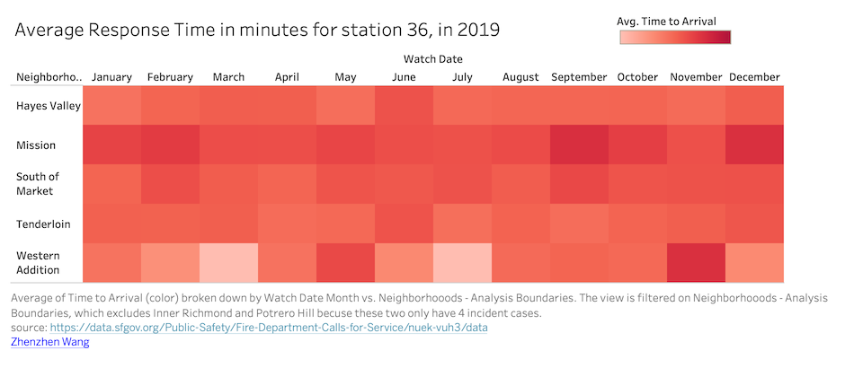

Prototype 3 - Average Response Time per Neighbourhood in Minutes
Zhenzhen Wang
Wrangling specific to prototype
Pie Chart:
Filtered By: Year 2019, Neighborhood not null and Call Type Group not null
Grouping By: Neighborhood, Call type (implementation only)
Aggregated By: Response time (Avg)
Incident Number (Sum)
Heatmap:
Filtered By: Year 2019, Neighbourhood not null, Call Type Group not null,
Batallion is "B02", and Station is "36"
Grouping By: Neighbourhood, and Watch Date
Aggregated By: Response time (Avg)
Incident Number (Sum)
Tableau Prototype

Conclusion based on the prototype
The pie chart prototype shows number of incidents in different neighborhoods of San Francisco, and the response time from fire station for citizens having different emergency calls. From the prototype above, we can see that the Tenderloin, South of Market and Mission are the neighborhoods having the most number of incidents with all having good response time (below 10 minutes). It also shows that the fire station response time for the average case is around 10 minutes. The neighbourhood with most number of incidents is Tendelorian (45,491 cases) with an average response time of 8.8 min.
The heatmap prototype shows average response time per month of Station "36" for each Neighbourhood which lies under Batallion "B02". From the prototype above, we can say that, the response time for the Financial District in the month of January is above the average response time. This is also the case for Potrero Hill for the month of April, May, June, July, September and October. The neighbourhood of Inner Richmond, South of Market, Hayes Valley, Tenderloin, and Western Addition all have response time below the average response time.
Feedback From Peer Review
| Ratings | Score |
|---|---|
| Rate the non-color encodings on a scale of 5 (appropriate for data type, strong visual channels) to 1 (inappropriate for data type, weak visual channels). | 4.3 |
| Rate the lie factor (including misleading context, weak visual encodings, or exaggerated encodings) on a scale of 5 (low lie factor) to 1 (high lie factor). | 4.3 |
| comments |
|---|
| Color scheme should not be diverging because the data it is encoding does not have negative values. I like how the heat map shows some months where the response time is worse than most others and makes that discrepancy clear. It is also hard to tell which label in the pie chart refers to which slice of the pie. |
| The number of incidents also can be reliant on population for the neighborhood that battalion serves, so maybe a ratio would be better for lie factor rather than raw count. The labeling for the pie chart is a bit difficult to parse for some of the smaller slices, if that is changed during interactivity to show details as the user hovers over a slice it would help with interpretation. Otherwise, the two charts seem good together and the interactivity seems like it will provide good information. /td> |
| Changes I made |
|---|
| The scores I got from feedback are pretty good except color encodeing. After reading Feedback comments from Classmates, I think it is unnessary for me to have pie char. But Classmates like my heapmap a lot. Because it not just look nice but also connect with my another two parters' analysing. I changed the color of the heatmap. |
New Tableau Prototype After Feedback
D3 Implementation
Average response time in minutes in 2019 for station 36, by Neighborhood and Call type(In progress, interactivity and legends will be done very soon)
Data encodeing
Average of Time to Arrival broken down by Watch Date Month vs. Neighborhooods - Analysis Boundaries. Color shows average of Time to Arrival. The marks are labeled by average of Time to Arrival. The data is filtered on Call Type Group, Exclusions (On Scene DtTm,Received DtTm), Station Area and Watch Date Year. The Call Type Group filter keeps Alarm, Fire, Non Life-threatening and Potentially Life-Threatening. The Exclusions (On Scene DtTm,Received DtTm) filter keeps 300,288 members. The Station Area filter keeps 36. The Watch Date Year filter keeps 2019. The view is filtered on Neighborhooods - Analysis Boundaries, which excludes Inner Richmond and Potrero Hill.
How to Interract with This Visualization?
Thig;ja;gj;jh;jhgroeuurout
Interesting part about This Visualization
Thig;ja;gj;jh;jhgroeuurout
How this visualization supports the theme?
Visualizations helps in analysing the number of incidents in different neighbourhoods of San Francisco and the average response time from the fire station after receiving the call.
Inspirations
kag;jrgojejge;oah;eh